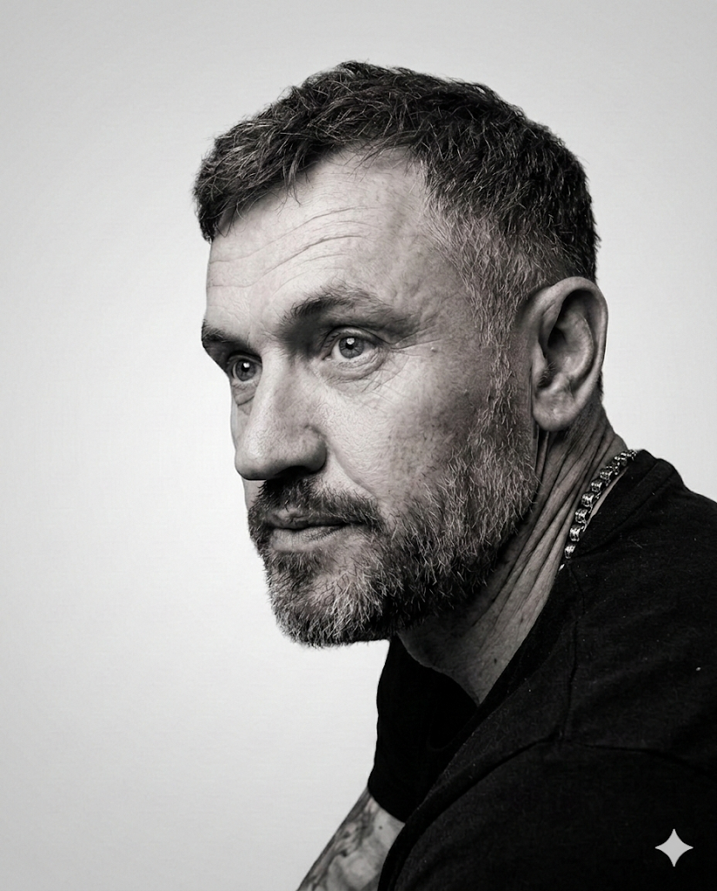

Choice
Over
Compulsion.
My journey into psychotherapy wasn't a traditional one. Before stepping into the consulting room, I spent years working in heavy industry—environments where survival often meant keeping your head down, your guard up, and ignoring how you actually felt.
I understand what it means to carry the weight of an early environment that demands you adapt to chaos. For a long time, my own response was to build defensive walls, burying vulnerability behind anger and rigid boundaries just to get by. I know the physical sensation of your nervous system preparing for a fight in a room where you are perfectly safe.
I chose to retrain because I experienced firsthand how transformative it is to finally untangle those old scripts. Therapy offered me a space to step out of survival mode and find a quiet, enduring clarity. It taught me that while our history undeniably shapes us, it does not have the final say on who we become.
Now, my practice is built on that same foundation of honest, unpretentious connection. I offer a grounded space where you don't have to perform, adapt, or protect anyone else. Working together, Adult-to-Adult, we can make sense of the noise and help you reclaim the autonomy to choose your own path forward.